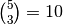
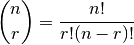

Combinatoric selections¶
Problem 53
There are exactly ten ways of selecting three from five, 12345:
123, 124, 125, 134, 135, 145, 234, 235, 245, and 345
In combinatorics, we use the notation, .
In general,

Using the notation on the original problem, it can be stated this way.
n!
^(n)C_(r) = -----------
r!(n-r)!
where r ≤ n, n! = n×(n-1)×...×3×2×1, and 0! = 1.
It is not until n = 23, that a value exceeds one-million:
How many, not necessarily distinct, values of , for 1 ≤ n ≤ 100, are greater than one-million?
Solution
A handy function for computing the product of a sequence
of numbers: euler05.prod().
from euler05 import prod
Rather than multiply and divide (and get big intermediate results), we’ll do the algebra by using set operators to reduce the fractions to just the relevant terms.
def comb( n, r ):
"""Binomial Coefficient :math:`\binom{n}{r}`.
>>> from euler53 import comb
>>> comb( 5, 3 )
10
>>> comb( 23, 10 )
1144066
"""
nFact= set(range(1,n+1))
rFact= set(range(1,r+1))
nrFact= set(range(1,n-r+1))
nFact.difference_update( rFact )
common_nr= nFact.intersection( nrFact )
nFact.difference_update( common_nr )
nrFact.difference_update( common_nr )
#print( nFact, nrFact )
return prod(nFact) / prod(nrFact)
Generate the binmial coefficients over 1,000,000.
def bin_coef_gen( limit=1000000 ):
for n in range(1,101):
for r in range(1,n+1):
c= comb(n,r)
if c > limit:
yield n, r, c
Test the module components.
def test():
import doctest
doctest.testmod(verbose=0)
Compute the answer.
def answer():
return len(list(bin_coef_gen()))
Confirm the answer.
def confirm( ans ):
assert ans == 4075, "{0!r} Incorrect".format(ans)
Create some output.
if __name__ == "__main__":
ans= answer()
confirm(ans)
print( "The number of binomial coefficients over 1,000,000:", ans )